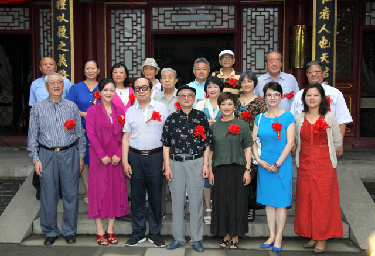

8月17日，87版《红楼梦》贾宝玉的扮演者欧阳奋强晒出剧组主创人员重聚，游览荣国府的合影，凤姐，探春、迎春、平儿、袭人等出镜，引起网友的纷纷感叹。当日，荣国府建成三十周年文化活动在石家庄正定荣国府举行。活动邀请87版《红楼梦》导演王扶林、作曲家王立平、中国红楼梦学会会长张庆善、演员邓婕和欧阳奋强等人重游荣国府，再说红楼梦。

“离开荣国府已经30年了，这次回来有一种回家的感觉。”这是王扶林在活动现场说的第一句话。据悉，当年的正定根本不在《红楼梦》剧组的选景名单之中，而最终取景地花落正定，源于当时正定县政府的积极争取。
据正定荣国府设计者、古建筑专家杨乃济介绍，在当年《红楼梦》剧组选择荣国府取景地的时候，正定县的领导联系到杨乃济，希望把荣国府建在正定。杨乃济说：“我最初听到这个想法的时候大吃一惊，在曹雪芹先生所写的《红楼梦》中，荣国府和大观园只有一墙之隔，而当时大观园已经在北京开始搭建了，这荣国府要是建在正定，岂不是要相距250多公里？”